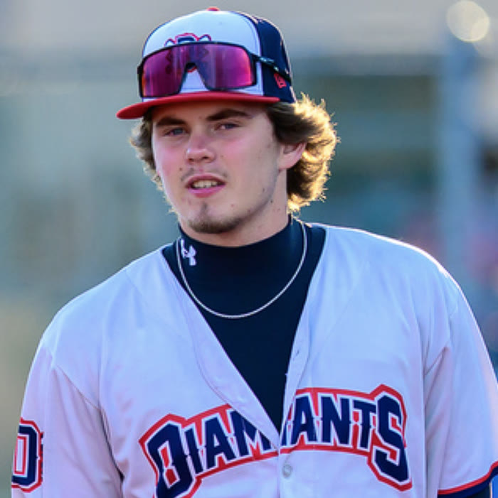

Homme de confiance en fin de match des Diamants dans la Ligue de Baseball Junior Élite du Québec — à 17 ans, l'un des plus jeunes joueurs du circuit, et détenteur du meilleur taux de retraits au bâton de la ligue en 2026. The Diamants' ninth-inning arm in Québec's top junior circuit — at 17, one of the youngest players in the league, and owner of its best strikeout rate in 2026.
Parmi les 115 lanceurs de la ligue avec 10 manches et plus (sauvetages : toute la ligue). 14 équipes. Among the 115 league pitchers with 10+ innings (saves: entire league). 14 teams.
| APP | GS | W | L | SV | IP | H | R | ER | HR | BB | HBP | SO | ERA | WHIP | BAA | FIP |
|---|---|---|---|---|---|---|---|---|---|---|---|---|---|---|---|---|
| 11 | 0 | 1 | 0 | 4 | 14.0 | 9 | 1 | 1 | 0 | 2 | 2 | 26 | 0.50 | 0.79 | .180 | 0.89 |
Chisholm is the Diamants' closer and an everyday infielder — the arm the coaching staff hands every high-leverage inning. Through July 21 he has struck out 26 of the 55 batters he has faced (47%) while walking just two (3.6%), a 13-to-1 strikeout-to-walk ratio that leads the league. He pounds the zone: 69.6% strikes overall and 61.8% first-pitch strikes, with no home runs allowed.
The results are not defense- or luck-driven: his batting average on balls in play is .375 — above the ~.300 norm, meaning contact against him has actually fallen for hits more often than average — yet he has allowed one run all season, because nearly half of opposing hitters never put the ball in play. His 0.89 FIP, built only on the outcomes a pitcher controls (strikeouts, walks, home runs), matches the 0.50 ERA.
About the league: the LBJEQ (Ligue de Baseball Junior Élite du Québec) is the province's top junior circuit — a 14-team, 21U league of mostly 18-to-21-year-old, college-age players, comparable in age band to a U.S. summer collegiate league. Chisholm, a 2027 grad, is 17 — one of the youngest players in the league — closing games against hitters up to four years older. The Académie de Baseball Canada, the national development academy, fields its prospect team in this league, and LBJEQ players regularly move on to Canadian university and U.S. NCAA/JUCO programs. Games are 7 innings; rate stats above are converted to per-9 for comparison.
Chisholm est le releveur de fin de match des Diamants en plus d'être un joueur d'avant-champ régulier — le bras à qui les entraîneurs confient toutes les manches sous pression. En date du 21 juillet, il a retiré au bâton 26 des 55 frappeurs affrontés (47 %) contre seulement deux buts sur balles (3,6 %), un ratio retraits/buts sur balles de 13 contre 1, meilleur de la ligue. Il attaque la zone : 69,6 % de prises et 61,8 % de premières prises, sans aucun circuit accordé.
Les résultats ne tiennent ni de la défensive ni de la chance : sa moyenne sur les balles en jeu (BABIP) est de ,375 — au-dessus de la norme d'environ ,300 — et il n'a pourtant accordé qu'un seul point toute la saison, parce que près d'un frappeur sur deux ne met jamais la balle en jeu. Son FIP de 0,89, calculé uniquement sur ce qu'un lanceur contrôle (retraits, buts sur balles, circuits), confirme la MPM de 0,50.
À propos de la ligue : la LBJEQ (Ligue de Baseball Junior Élite du Québec) est le plus haut circuit junior de la province — 14 équipes, catégorie 21U, composée majoritairement de joueurs de 18 à 21 ans d'âge collégial. Chisholm, finissant 2027, a 17 ans — l'un des plus jeunes joueurs de la ligue — et termine les matchs contre des frappeurs qui ont jusqu'à quatre ans de plus que lui. L'Académie de Baseball Canada y aligne son équipe d'espoirs nationaux, et les joueurs de la LBJEQ poursuivent régulièrement leur parcours dans les universités canadiennes et les programmes NCAA/JUCO américains. Les matchs sont de 7 manches ; les statistiques par 9 manches ci-dessus sont converties pour comparaison.
Statistiques au 21 juillet 2026 — source : GameChanger (LBJEQ). Stats through July 21, 2026 — source: GameChanger (LBJEQ).